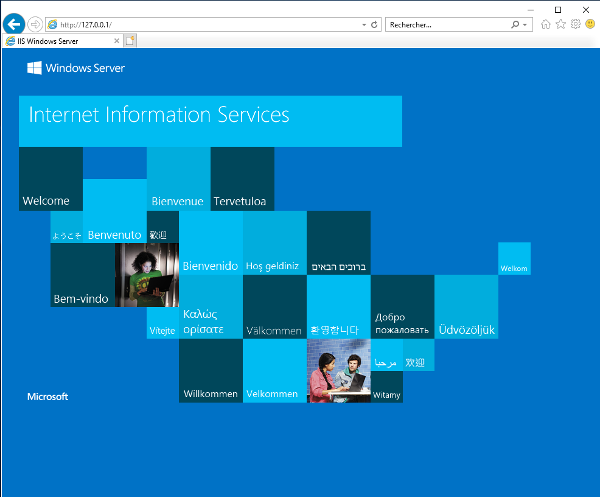
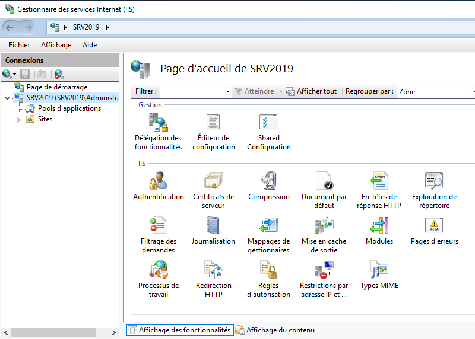
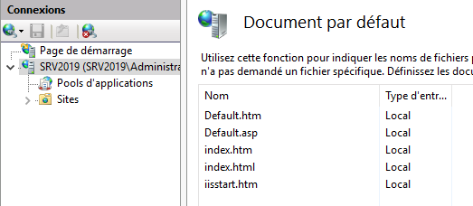

ENI TSSR 15 - Services Web et Sécurité
Cours “Serveurs Web, Certificats et PKI Microsoft, VPN” @ ENI (2023)
| Dates : | du 16/01 au 20/01/2023 |
|---|---|
| Formateur : | Matthieu CLAVEAU |
id: 160
- ENI TSSR 15 - Services Web et Sécurité
- Les Objectifs
- Les Serveurs Web
- Installation Apache
- Installation d’IIS
- Création de sites sous Apache
- Création de sites sous IIS
- Distinction entre les sites (p58)
- Module 2 Les Certificats Numériques (p66)
- Les certificats auto-signés (p72)
- Les certificats auto-signés Apache (p74)
- Configuration du site Apache (p90)
- Les certificats auto-signés IIS (p95)
- Configuration du site IIS (p100)
- Installation PKI (p107)
- Modèle de certificat IIS (p119)
- Installation certificat IIS (p125)
- Vérification sur les navigateurs (p133)
-
VPN (p142)
- VPN Nomade (p144)
- VPN Site à Site (p151)
- OpenVPN (p155)
- Ajout d’un autorité de certification dans PfSense (p157)
- Authentification LDAP dans PfSense (p165)
- Paramétrage OpenVPN Server (p173)
- OpenVPN Client (p182)
-
les Objectifs (p2)
- module 1 : serveur web (Apache/IIS)
- module 2 : gestion des certificats (PKI)
- module 3 : gérer les accès des utilisateurs nomades
-
M01 Les Serveurs Web (p4)
- Installer un serveur web
- Publier des sites web
- authentifier l’accès aux sites web
1.1 Installation Apache 1.2 Installation IIS 1.3 Création de sites sous Apache 1.4 Création de sites sous IIS 1.5 Distinction entre les sites
-
M02 Les certificats numériques (p34) 2.1 Les certificats auto-signés 2.2 Les certificats auto-signés Apache 2.2.1 Configuration du site Apache 2.3 Les certificats auto-signés IIS 2.2.1 Configuration du site IIS 2.4 Installation PKI
2.5 Modèle de certificat IIS 2.6 Installation de certificat IIS 2.7 Verification sur les navigateurs -
Utilisateurs Nomades (p79) 3.1 VPN 3.2 VPN Nomade 3.3 VPN Site à Site 3.4 OpenVPN & pfSense 3.4.1 Ajout d’une autorité de certification dans pfSense 3.4.2 Authentification LDAP dans pfSense 3.4.3 Paramétrage OpenVPN Server 3.4.4 OpenVPN Client
Objectifs
- Expliquer le fonctionnement d’un serveur web
- Installer un serveur web
- Paramétrer et publier un site internet
- Authentifier les accès aux sites web
- Installer une autorité de certification Microsoft
- Mettre en place un serveur VPN pour les utilisateurs nomades
Sommaire : - TP1 : installation de l’infrastructure - module 1 : serveur web (Apache/IIS) - module 2 : gestion des certificats (PKI) - module 3 : gérer les accès des utilisateurs nomades
TODO: INSERER PLAN DU RESEAU
Module 1 - Les Serveurs Web
Objectifs
- Installer un serveur web (Apache / IIS)
- Publier des sites web
- Authentifier l’accès aux sites web
Les serveurs web les plus répandus : Apache, Nginx (EngineX), IIS
1.1 Le protocole HTTP
Le protocole HTTP est un protocole de la couche Application du modèle OSI.
On utilise le protocole TCP comme couche Transport, le serveur HTTP répondra alors par défaut sur le port 80 (ou 443 pour HTTPS).
Les méthodes permettent de spécifier le type d’action à réaliser. Les plus utilisées sont :
- GET : demande de récupération de l’object cible
- POST : soumission de données, ex. un formulaire HTML
- HEAD : demande d’informations sur un objet cible
Depuis la version 1.1, le protocole HTTP supporte et utilise par défaut des connexions persistantes. La connexion n’est plus immédiatement fermée après une requête, mais reste disponible pour une nouvelle requête. Cela permet d’accélérer le chargement de pages contenant plusieurs ressources, tout en diminuant la charge du réseau.
1.2 Le Serveur Apache
Historique
- issue du serveur HTTPD
- Regroupe des correctifs développés par différents webmaster
- se sont réunis et ont formés “Apache Foundation”
- Le nom Apache est un jeu de mot avec “A patchy server” (un serveur rafistolé)
- La 1e version date d’Avril 1995 (Apache Server v0.62)
- 1999 : Apache 1.3
- 2000 : Apache 2.0 Alpha
- 2002 : Apache 2.0 Stable
- 2005 : Apache 2.2
- 2012 : Apache 2.4
Installation
Sous Debian :
apt install apache2 lynx
- lynx : classic non-graphical (text-mode) web browser
Vérification de l’installation d’Apache
- Dans un navigateur, allez sur http://localhost. Affiche la page par défaut.
Gestion du service Apache2
systemctl
# systemctl { start | stop | restart | reload | enable | disable | status } apache2.service
systemctl restart: redémarrage du daemon avec coupuresystemctl reload: redémarrage du daemon sans coupure
apache2ctl
$ apache2ctl -h
Usage: /usr/sbin/apache2 [-D name] [-d directory] [-f file]
[-C "directive"] [-c "directive"]
[-k start|restart|graceful|graceful-stop|stop]
[-v] [-V] [-h] [-l] [-L] [-t] [-T] [-S] [-X]
Options:
-D name : define a name for use in <IfDefine name> directives
-d directory : specify an alternate initial ServerRoot
-f file : specify an alternate ServerConfigFile
-C "directive" : process directive before reading config files
-c "directive" : process directive after reading config files
-e level : show startup errors of level (see LogLevel)
-E file : log startup errors to file
-v : show version number
-V : show compile settings
-h : list available command line options (this page)
-l : list compiled in modules
-L : list available configuration directives
-t -D DUMP_VHOSTS : show parsed vhost settings
-t -D DUMP_RUN_CFG : show parsed run settings
-S : a synonym for -t -D DUMP_VHOSTS -D DUMP_RUN_CFG
-t -D DUMP_MODULES : show all loaded modules
-M : a synonym for -t -D DUMP_MODULES
-t -D DUMP_INCLUDES: show all included configuration files
-t : run syntax check for config files
-T : start without DocumentRoot(s) check
-X : debug mode (only one worker, do not detach)
Action '-h' failed.
The Apache error log may have more information.
apache2ctl restart: redémarre ou démarre le daemon Apache.- Vérification automatique des fichiers de configuration avant de lancer le redémarrage.
apache2ctl fullstatus: affiche le rapport d’état complet.- Le module
mod_statusdoit être activé et vous devez disposer d’un navigateur en mode texte tel quelynx.
- Le module
apache2ctl graceful: redémarre ou démarre le daemon en douceur.- Les connexions en cours ne sont pas fermées.
- Cette option vérifie automatiquement les fichiers de configuration.
apache2ctl graceful-stop: arrête le daemon qd disponible.- Les connexions en cours ne sont pas fermées.
apache2ctl configtest: vérifie la syntaxe des fichiers de configapache2ctl -t: Vérification syntaxiqueapache2ctl -S: affiche les sites publiésapache2ctl -l: affiche des modules compilés avec Apache- Module statique : chargé au démarrage
- Module partagé : chargé à la demande
apache2ctl -h: affiche l’aide
Configuration d’Apache
Répertoire /etc/apache2
| Répertoire /etc/apache2/ | |
|---|---|
apache2.conf |
fichier principal de configuration. Charge les autres fichiers grâce aux directives Include. |
| conf-available/ | contient les fichiers de configuration complémentaires. |
| conf-enabled/ | liens symboliques des configurations chargés au démarrage pointant vers conf-available/. |
envvars |
contient les variables d'environnement pour l'exécution des commandes apache2ctl. |
magic |
définit les comportements d'Apache en fonction des extensions de fichiers. |
ports.conf |
fichier de définition des ports d'écoute d'Apache : HTTP 80 (défaut), HTTPS 443. |
| Modules complémentaires |
|
| Sites hébergés |
|
Instruction Listen
- Définit les ports et les adresses sur lesquels le serveur écoute
- Présente dans le fichier
ports.conf -
Présente plusieurs fois (80 & 443)
-
Structure de l’instruction :
Listen [<adresseIP>:]port [<protocole>]
Exemple :
Listen 80: écoute sur toutes les interfaces sur le port 80Listen 443: écoute sur toutes les interfaces sur le port 443Listen 80.10.12.13:80: écoute sur l’interface 80.10.12.13 sur le port 80Listen 80.10.22.23:433: écoute sur l’interface 80.10.22.23:443 sur le port 443
Instruction DirectoryIndex
- Présente dans le fichier /etc/apache2/mods-enabled/dir.conf
- Liste le nom du fichier à envoyer au navigateur lors de l’accès à un site
<IfModule mod_dir.c> DirectoryIndex index.html index.cgi index.pl index.php index.xhtml index.htm monAccueil.html </IfModule> # vim : syntax=apache ts=4 sw=4 sts=4 sr noet
Autres commandes
-
Gestion des modules
a2enmod <nom_module>: active le modulea2dismod <nom_module>: désactive le module
-
Gestion des sites
a2ensite <nom_fichier.conf>: publie le sitea2dissite <nom_fichier.conf>: stoppe la publication du site
Alerte ServerName
Lors du démarrage du service Apache, il peut arriver que le message d’erreur suivant apparaisse;
apache2: Could not reliably determine the server's fully qualified domain name,
using 192.168.255.233 for ServerName . Set the 'ServerName’ directive globally
to suppress this message
Ce message n’est pas bloquant, mais si on souhaite le supprimer, il faudra :
-
Soit définir un FQDN dans /etc/hosts
# vim /etc/hosts 127.0.0.1 localhost srv-apache.mondomaine.lcl
-
Soit préciser la directive ServerName dans /etc/apache2/apache2.conf
ServerName srv-apache.mondomaine.lcl
Attention : ne pas spécifier une adresse que l’on voudrait réutiliser pour un site web.
1.3 Installation IIS
1.3.1 Historique IIS
- IIS = Internet Information Service
- PWS = Personal Web Server. Serveur web grand public fourni avec les OS 9x.
| Version IIS | Version Windows | Version IIS | Version Windows |
|---|---|---|---|
| IIS 1.0 | Windows NT 3.51 | IIS 6.0 | Server 2003 |
| IIS 2.0 | Windows NT 4.0 | IIS 7.0 | Server 2008 & Vista |
| IIS 3.0 | Windows NT 4.0 SP3 | IIS 7.5 | Server 2008 R2 & 7 |
| IIS 4.0 | Windows NT 4.0 OP | IIS 8.0 | Server 2012 & 8 |
| IIS 5.0 | Windows 2000 | IIS 8.5 | Server 2012 R2 & 8.1 |
| IIS 5.1 | Windows XP Pro | IIS 10.0 | Server 2016 & 10 |
1.3.2 Installation du service IIS
Ce fait à partir du gestionnaire de serveur (Rôle & Service de rôle).
1.3.3 Vérification de l’installation de IIS
- Depuis un navigateur
- Depuis un OS avec GUI :
http://@IP- http://127.0.0.1
- http://localhost
- Depuis un OS sans GUI
- à partir de
lynxsous Debian
- à partir de
1.3.4 Répertoire d’installation de IIS
- Répertoire de travail : c:\inetpub\
- Répertoire contenant le site web par défaut : c:\inetpub\wwwroot

1.3.5 Administration de IIS
Administration se fait via la console Gestionnaire des services Internet (IIS) ou en powershell.
1.3.5.1 Paramétrage du serveur

- Document par défaut : liste des fichiers de démarrage des sites
- Authentification : gestion des différentes authentifications
- Certificats de serveur : gestion des différents certificats
- Exploration de répertoire : gestion de l’affichage du contenu du répertoire
- Sites : Liste des sites hébergés par le serveur. Site par défaut : “Defaut Web Site”

Voir TP2 - Installation d’Apache et d’IIS
1.4 Création de sites sous Apache
1.4.1 Fichiers de configuration
Les fichiers de configuration des sites sont stockés dans /etc/apache2/sites-available.
Par convention, on nomme ces fichiers d’après le nom du site mais ce n’est pas obligatoire, ex. 001-monsite.conf.
1.4.2 Structure du fichier de configuration
Définition du VirtualHost
La définition d’un hôte virtuel se fait avec la balise <VirtualHost ...>...</VirtualHost>.
Cette balise peut prendre en paramètre une IP et/ou un numéro de port.
Les wildcards * sont autorisées pour l’ip comme pour le port.
Exemples:
<VirtualHost *:80>
DocumentRoot /var/www/www.tssr.lcl
ServerName www.tssr.lcl
</VirtualHost>
<VirtualHost *:443>
DocumentRoot /var/www/monsite.lcl
ServerName monsite
</VirtualHost>
<VirtualHost 10.20.*:*>
...
</VirtualHost>
DocumentRootest une directive précisant le répertoire contenant les données du site (code source)- Chemin par défaut : /var/www
- Un répertoire par site hébergés
ServerName??? alias du site ?
Ajout de sections de configuration
On peut ajouter des sections de configuration dans les fichiers de configuration.
- Elles permettent de gérer les accès à des éléments de l’arborescence du site.
- Section
<Directory> ...</Directory>pour un répertoire. - Section
<Files> ... </Files>pour un fichier quelque soit son emplacement.
- Section
- Elles permettent de gérer les accès à des éléments hors de l’arborescence du site.
- Section
<Location> ... </Location>pour gérer l’accès des éléments utilisés par le site web (ex. bdd)
- Section
Ordre de lecture des section de configuration
Les sections sont traités dans l’ordre où elles apparaissent.
<Directory>: ces sections sont traitées en allant du répertoire ayant le chemin le plus court au plus long. Si plusieurs sections vers le même répertoire, elles sont interprétées dans l’ordre.<Files><Locations>
Gestion des accès simples
La directive Require :
| DIRECTIVE | DEFINITION | EXEMPLE |
|---|---|---|
| Require all granted | L'accès est autorisé à tous | Require all granted |
| Require all denied | L'accès est refusé à tous | Require all denied |
| Require ip @IP | Seul l'hôte <@IP> est autorisé | Require ip 192.168.10.200 |
| Require ip adresse_reseau | N'autorise que les hôtes du réseau donné (ici 192.168.10.0/24), le 0 est facultatif (?) | Require ip 192.168.10 |
| Require host suffixe_dns | N'autorise que les hôtes dont le nom contient le suffixe DNS donné. Recherche DNS Inverse (@IP > FQDN) puis recherche DNS Directe (FQDN > @IP) |
Require host tssr.lcl |
| Require forward-dns nom_hôte | N'autorise que l'hôte défini (adresse IP). Recherche DNS directe (FQDN > @IP) |
Require forward-dns ad.tssr.lcl |
| Require local | N'autorise ques les adresses locales (127.0.0.0/8, ::1, les ip de l'hôte) | Require local |
Gestion des accès multiple
- La directive
RequireAll: toutes les directives require doivent être validées. - La directive
RequireAny: Au moins une directive require doit être validée. - La directive
RequireNone: Aucune directive require ne doit être validée.
| ET |
Autorise le réseau 192.168.10.0/24 Refuse l'hôte 192.168.10.100 |
<RequireAll> |
|
|---|---|---|---|
| OU |
Autorise le réseau 192.168.10.0/24 Autorise le réseau 192.168.30.0/24 Refuse le réseau 192.168.20.0/24 |
<RequireAny> |
|
| OU |
Refuse le réseau 192.168.10.0/24 Refuse le réseau 192.168.20.0/24 | <RequireNone> |
|
Directive Options
- Permet d’ajouter ou de supprimer des fonctionnalités
- Positionner sur :
- sur la configuration globale du serveur (apache2.conf)
- sur un hôte virtuel (VirtualHost)
- sur une répertoire (Directory)
- Structure de la directive :
Options [+|-]option1 [+|-]option2
| Nom | Rôle |
|---|---|
| All | Configuration par défaut. Toutes les options, sauf MultiViews |
| FollowSymLinks | Autorise le suivi des liens symboliques à positionner dans les répertoires |
| Indexes | Gère l’affichage du contenu si aucun fichier de démarrage présent |
| MultiViews | Gère la compatibilité d’affichage en fonction du navigateur |
Exemples d’utilisation
-
Pour le dossier /var/www : autoriser l’indexation de fichiers, la compatibilité multilingue et le suivi des liens symboliques du système de fichiers
<Directory /var/www> Options Indexes MultiViews FollowSymlinks </Directory> -
Pour le dossier /var/www/specs : Utilisation de
-et+pour préciser autorisation ou interdiction d’options.
Ex. Indexation interdite mais exécution de scripts cgi autorisée.
<Directory /var/www/specs>
Options -Indexes +ExecCGI
</Directory>
Directive DirectoryIndex
- Tous les fichiers des sites sont stockés dans /var/www
- Créer un sous-répertoire par site
- Fichier de démarrage :
- Copier les fichiers du site Web dans le répertoire /var/www/www.tssr.lcl
- Le nom du fichier à envoyer au navigateur dépend de la directive DirectoryIndex
Exemple: Fichier de démarrage Index.html
(sic)
Exemple de configuration
Pour le site www.tssr.lcl
- Répertoire du site : /var/www/www.tssr.lcl
- Fichier de configuration : /etc/apache2/sites-available/001-tssr.conf
<VirtualHost *:80>
DocumentRoot /var/www/www.tssr.lcl
ServerName www.tssr.lcl
<Directory /var/www/www.tssr.lcl>
Options MultiViews FollowSymlinks
AllowOverride None
Require all granted
</Directory>
</VirtualHost>
1.5 Création de sites sous IIS
1.6 Distinction entre les sites
~Fin~